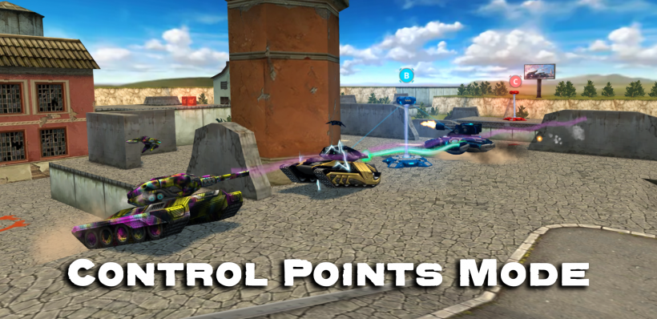
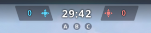

概括
控制点是一种团队战斗模式。这有点不寻常。此模式的目标是夺取点位，从而奖励球队及其球员。
战斗受得分（标准战斗中 50 分）或时间（标准战斗中 15 分钟）的限制。
描述
团队争夺对地图上某些点的控制权。
当点在他们的控制之下时，一个团队会得分，而当点在敌人的控制之下时，他们会失去得分。
获得的点位越多，队伍获得的积分就越多，而队伍失去的积分就越少。
获胜者是得分最多的球队。
团队重生点靠近他们的基地。(然而，也有极少数例外)
为了成功占领一个敌方点，有必要在该点上创造至少比对方队伍小的数量优势。
战斗开始时，您需要尽可能多地占领中立点。
在有 5-7 个点的大地图上，派一名玩家占领最近的点就足够了。
同时，其他玩家应该开始抢其余的点。
在 5 点地图上成功占领第三个中立点为队伍带来了显着的战略和心理优势。
通常，地图上的点数是奇数，所以要想获胜，只需要比对方多夺一个点就足够了。
然后，和你的队友一起，试着将敌人赶出剩余的点，并将他们锁定在自己的基地内。
需要注意的是，在CP模式中，团队的每个成员都扮演着非常重要的角色。
通常，一个成员较少的球队，或者成员不能一起工作的球队，很快就会变得劣势。
一些常用的术语包括“捕获”、“中和”和“检索”。
夺取一个点需要在它附近停留足够长的时间以使其颜色完全变为蓝色
图标和指示器

控制点计分器
分数计数器显示当前分数。同时显示点位获得情况。

敌方捕获点
当一个占领点被敌方占领时，它会变成红色。
当该点完全变为红色时，该点已被敌方完全捕获。

我方捕获点
当一个占领点被我方占领时，它会变成蓝色。
当该点完全变为蓝色时，该点已被我方完全捕获。

中性捕获点
当任何一方都没有占领占领点时，它保持灰色中性。
如果该点上有灰色，则表示该点没有被完全捕获。
有趣的事实
自毁后，玩家将失去 10 分的战斗分数，并以他们的名义失去 1 次击杀
如果玩家成功击杀敌人，他们将获得 40 点经验值和 15 点战斗分数
如果玩家协助消灭敌人，他们将获得 5 点战斗分数以及 20 点经验值
使用磁力炮治疗玩家最多可获得 12 点战斗力和 20 经验值
捕获一个中性点需要 5 秒，随后中和一个捕获点需要 5 秒。这意味着需要 10 秒才能完全占领敌人先前拥有的点。
(请注意，这些数字涉及这样一个事实，即您是唯一试图抓住这一点的人)
参与占领控制点的玩家，每人获得 15 点战斗分数以及 20 点经验值
参与控制点无效化的玩家，每人获得 5 点战斗分数以及 20 点经验值
开发者不断监控此模式下的战斗及其动态，并可以调整模式参数
CP 模式于 2012 年 9 月 6 日在更新 1.100 中首次亮相。当时它仅在少数地图上发布
2014 年 6 月 2 日，“控制点”在大多数已经可以在 CTF 模式下玩的地图上可用